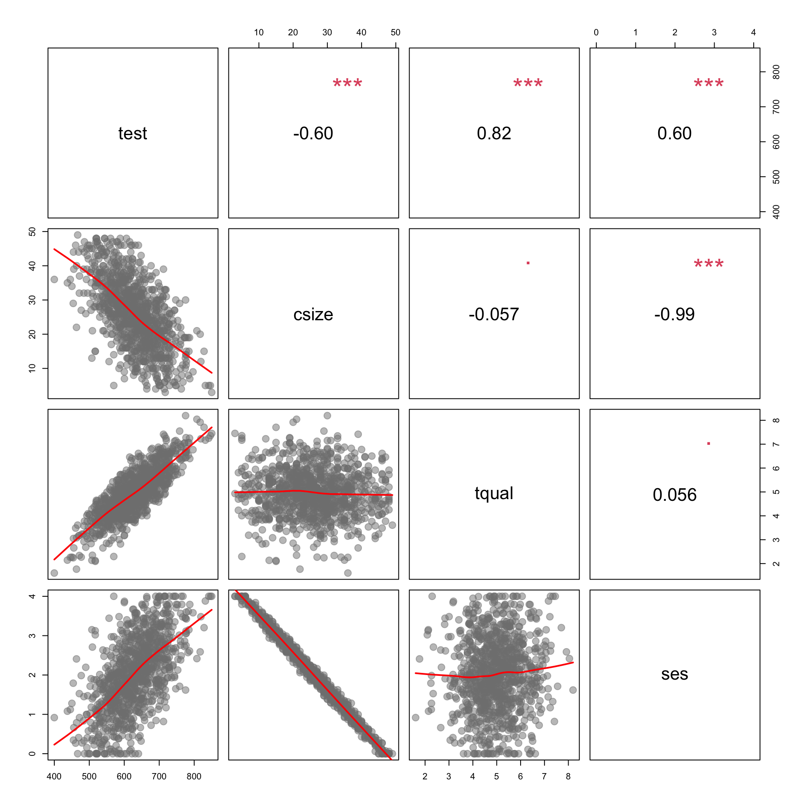
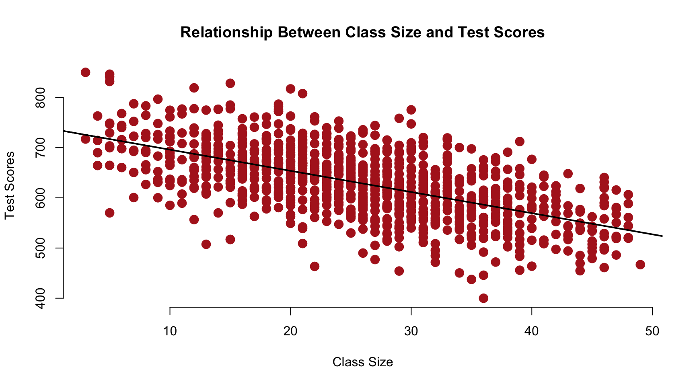
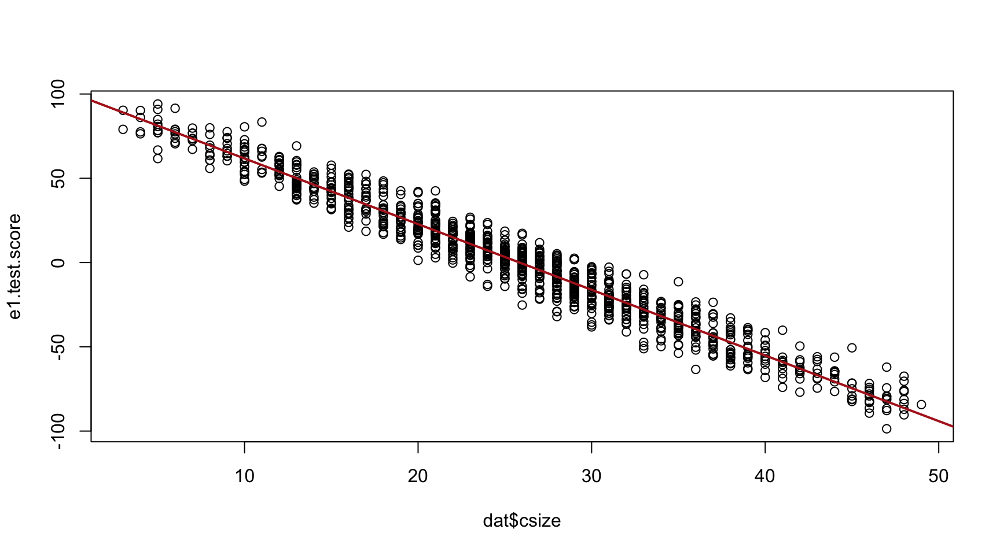
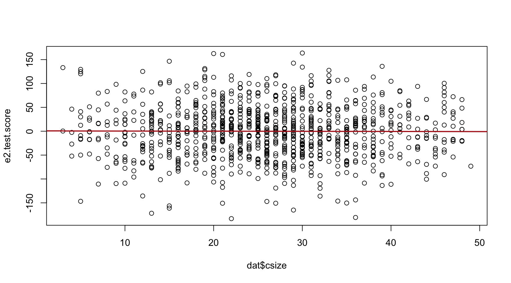
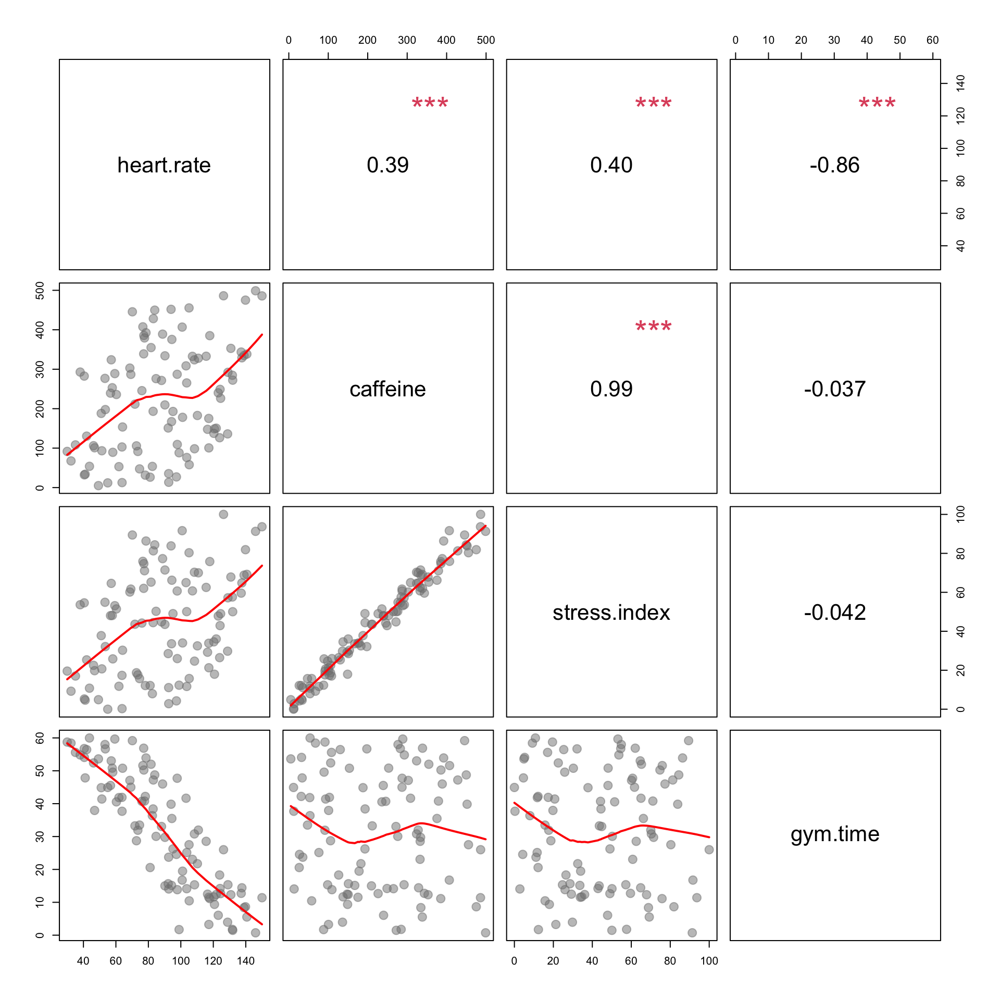

library( pander ) # formatting tables
library( dplyr ) # data wrangling
library( stargazer ) # regression tablesURL <- "https://raw.githubusercontent.com/DS4PS/cpp-523-fall-2019/master/labs/class-size-seed-1234.csv"
dat <- read.csv( URL )| test | csize | tqual | ses |
|---|---|---|---|
| 504 | 38 | 3.793 | 0.7947 |
| 651.3 | 23 | 5.277 | 2.301 |
| 623.6 | 42 | 6.084 | 0.4609 |
| 539 | 21 | 2.654 | 2.635 |
| 673.1 | 20 | 5.429 | 2.703 |
| 584.4 | 46 | 5.506 | 0.09412 |

Class Size (x-axis) and Test Score (y-axis). This will serve as a visual representation of our baseline model of the relationship between Class Size and Test Score.
#plot( dat$csize, dat$test,
# xlab="Class Size", ylab="Test Scores",
# main="Relationship Between Class Size and Test Scores" )
# abline( lm(test~csize,data=dat), col="firebrick", lwd=2 )
# CHANGE THE PLOT STYLE:
#
# pch=19 # change point style
# cex=1.5 # change point size
# col="firebrick" # change color *points?*
# bty="n" # remove bounding box
#Also changed Abline to black so it was visible,
#made others black instead.
plot( dat$csize, dat$test, col="firebrick", pch=19, bty="n", cex=1.5, xlab="Class Size", ylab="Test Scores",main="Relationship Between Class Size and Test Scores" )
abline( lm(test~csize,data=dat), col="black", lwd=2 )
\(test = b_0 + b_1 \cdot tqual + e1\)
model.01 <- lm( test ~ tqual, data=dat )
e1.test.score <- model.01$residual
plot( dat$csize, e1.test.score )
abline( lm(e1.test.score~dat$csize), col="firebrick", lwd=2 )
The strength of the relationship improved dramatically as we have removed any excess or unexplained residual variance from the test scores.
#### Regression of Test scoreson SES
\(test = b_0 + b_1 \cdot ses + e2\)
model.02 <- lm( test ~ ses, data=dat )
e2.test.score <- model.02$residual
plot( dat$csize, e2.test.score )
abline( lm(e2.test.score~dat$csize), col="firebrick", lwd=2 ) The strength of the relationship is lost because class size and test score are highly correlated so when we use only the residuals and compare them with test scores, the slope falls flat.
#### Analysis
These graphs demonstrate the effects of adding the control variables Teacher Quality and SES to the baseline model of the relationship between Class Size and Test Score. Conceptually, the control variable will improve a model by removing variance in the DV to make the estimate either more precise (smaller standard errors) or less bias (adjust the slope of the policy variable).
Teacher Quality has partially reduced the unexplained portions of the outomes of test scores in our main model.
Socio Economic Status has removed the explained portion of the variance as we can see in the slope from our second graph.
To change the slope of this model, it would require the variable selected would need to be correlated with caffiene consumption. The stress index variable is the most closely correlated with caffiene consumptuion, therefore it should produce a slope of zero. If the items were uncorrelated, the slope would not change.
Policy Question: Which would result in a larger standard error associated with caffeine if removed from the model?
Since Gym Time is not correlated with Stress Index, or Caffeine, it would produce a larger standard error if it were removed from our caffeine model. If it were left in, there would be a smaller standard error as uncorrelated variables create smaller standard errors.
| Dependent variable: | |
| heart.rate | |
| caffeine | 0.037 |
| (0.047) | |
| stress.index | 0.228 |
| (0.246) | |
| gym.time | -1.440*** |
| (0.062) | |
| Constant | 116.022*** |
| (2.982) | |
| Observations | 100 |
| R2 | 0.873 |
| Residual Std. Error | 11.016 (df = 96) |
| Note: | p<0.1; p<0.05; p<0.01 |
